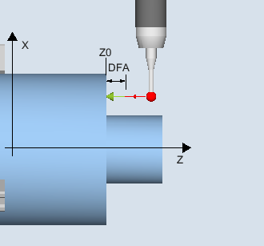

Gilt nur auf Drehmaschinen ohne die Technologie Fräsen.
Mit dieser Messvariante kann der Radius eines Werkstückmesstasters mit den Schneidenlagen SL=5 bis 8 an einer Fläche abgeglichen werden. Damit werden die Triggerpunkte des Messtasters ermittelt.
Die Kalibrierfläche ist werkstückbezogen. Es kann nur in der ausgewählten Achse und Richtung kalibriert werden, die sich senkrecht zu dieser Kalibrierfläche befindet.
Die ermittelte Schaltposition des Werkstückmesstasters in der parametrierten Achse und Richtung, wird mit dem Sollwert der Referenzfläche verrechnet und daraus der entsprechende Triggerpunkt ermittelt.
Wenn keine Alarme erfolgen, wird der Triggerwert in den gewählten Abgleichdatensatz des Werkstückmesstasters eingetragen.
Der Messtaster fährt in Messrichtung an die Referenzfläche (z. B. Werkstück).
Abgleich: Radius an Fläche (CYCLE973), Beispiel G18, SL=8
Die Fläche muss achsparallel zu einer Achse des Werkstückkoordinatensystems (WKS) liegen.
Die Kalibrierfläche muss eine geringe Oberflächenrauhigkeit besitzen.
Der Werkstückmesstaster wird als Werkzeug mit Werkzeugkorrektur aufgerufen.
Als Messtastertyp ist 580 zu vereinbaren.
Der Messtaster ist gegenüber der Kalibrierfläche zu positionieren.
Der Messtaster (Kugelradius) steht im Abstand des Messweges gegenüber der Kalibrierfläche.
Siehe auch:
Abgleich: Radius an Fläche (CYCLE973)